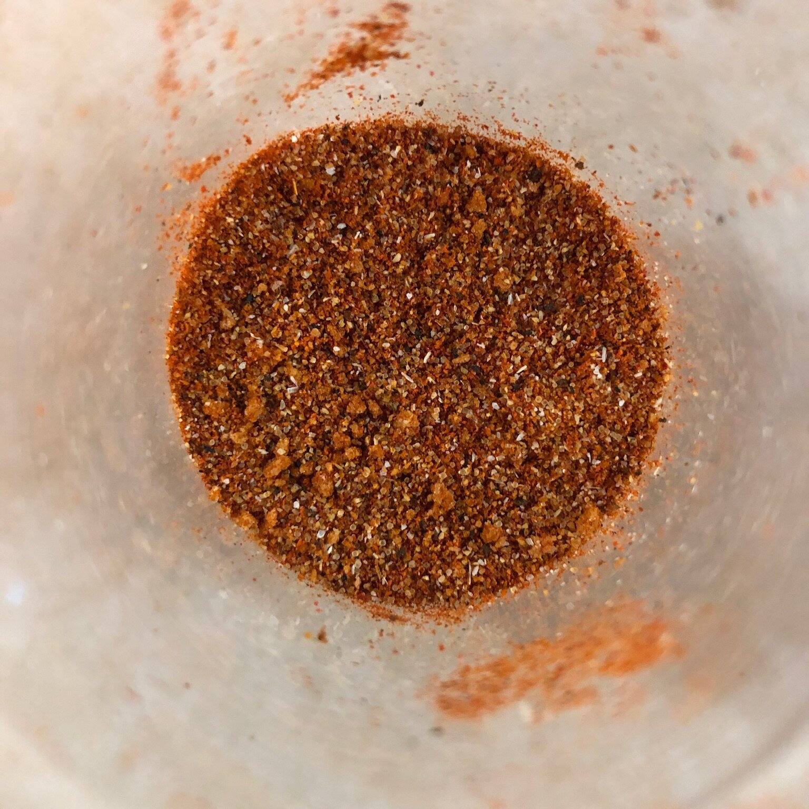

Lasagna

Stacey's Hamburger seasoning
This is what Stacey uses to season her hamburger patties before cooking them. It gives them a wonderful flavor that makes a so-so hamburger extraordinary.
Ingredients
- 1 tablespoon paprika
- 1 1/4 teaspoons salt
- 1 teaspoon black pepper
- 1/2 teaspoon brown sugar
- 1/2 teaspoon garlic powder
- 1/2 teaspoon onion powder
- 1/4 teaspoon ground cayenne pepper
Steps
Step 1
- Combine the paprika, salt, pepper, brown sugar, garlic powder, onion powder, and cayenne pepper in an airtight container; seal. Shake to combine. Store in a cool, dry place between uses.